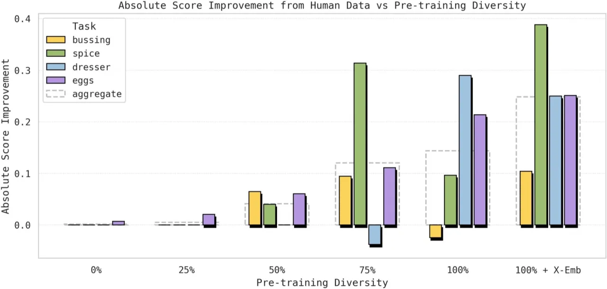
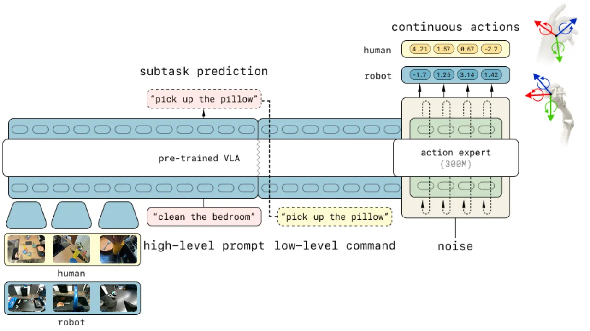
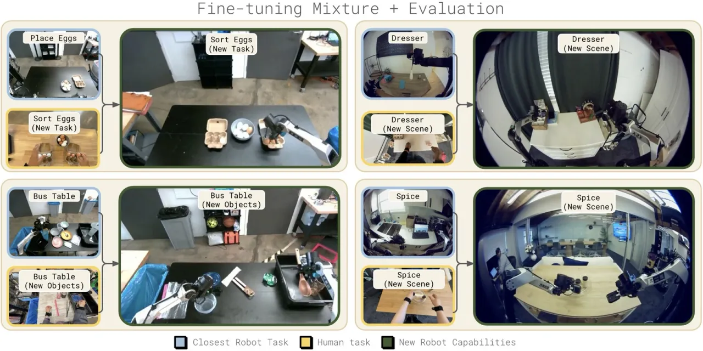
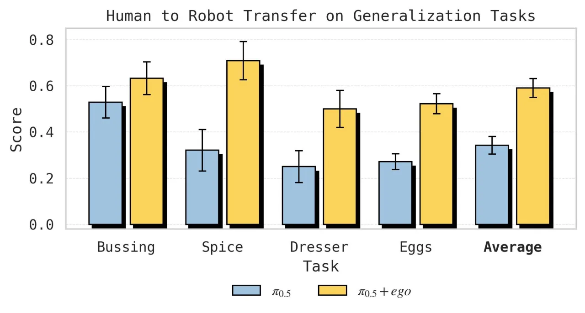
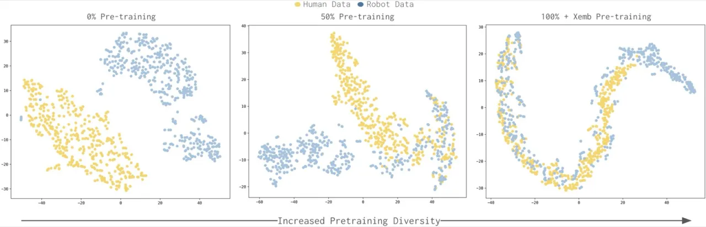
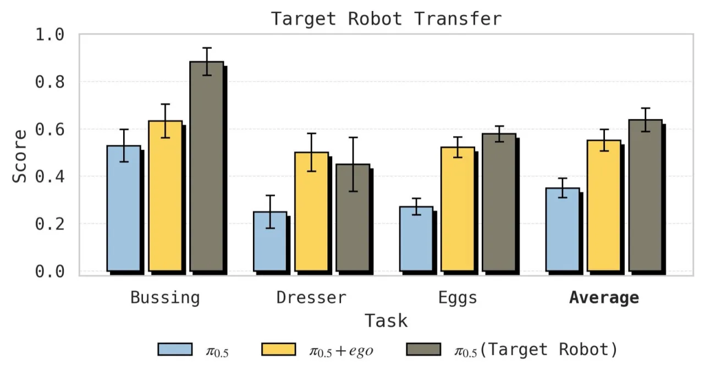

本文探究 Vision-Language-Action (VLA) 模型能否利用人类示范视频数据来提升机器人技能迁移。研究发现，human-to-robot transfer 是一种涌现能力：只有当模型在足够多样化的场景、任务和机器人形态上完成预训练后，co-training 人类视频数据才能带来显著收益。最终在多个泛化任务上成功率最高翻倍，验证了跨形态表征统一的关键作用。
训练机器人需要大量专门的遥操作数据，成本高且难以规模化。互联网上拥有海量人类操作视频，理论上可以极大丰富训练数据多样性——但人与机器人在形态、视角、运动方式上存在巨大差异，直接利用并非易事。
过去的研究尝试用显式的跨形态对齐（如视频预测、形态嵌入对齐）来桥接这一鸿沟，但效果不稳定。本文提出一个不同视角：这种迁移能力是否是大规模 VLA 预训练多样性带来的涌现属性，而非需要专门设计的桥接机制？
"Human-to-robot transfer is an emergent property of diverse VLA pretraining."

本文在 π0.5（pi-0.5）VLA 基础上，以 50-50 的比例混合人类示范与机器人数据进行 fine-tuning，同时预测 high-level 子任务和 low-level 连续动作，无需任何显式的跨形态对齐机制。

实验人员佩戴头戴摄像头（模拟机器人主相机视角）与左右腕部摄像头，在四个任务上共采集约 14 小时人类示范数据：

人类手部 3D 关键点被转换为相对 6-DoF end-effector 轨迹，维度与机器人动作空间（18 维：双臂各 6 维 + 底盘移动 6 维）相同，但不估计人类夹爪状态（夹爪动作仅从机器人数据学习）。
在 π0.5 基础上同时预测 high-level subtask（子任务语言描述）与 low-level continuous action（连续动作），混合比例固定为 robot:human = 50:50。研究特别考察了不同 pretraining diversity（0%～100%）对迁移效果的影响，以验证涌现假说。
在 4 个操作任务上评估 co-training（Robot + Human）与纯机器人数据 fine-tuning（Robot only）的差异，并系统分析 pretraining diversity、wrist camera、high-level/low-level 分工等关键因素。
| 任务 | Robot Only 基线 | Robot + Human（本文） | 提升 |
|---|---|---|---|
| Spice Rack | 32% | 71% | +39% |
| Dresser | 25% | 50% | +25% |
| Bussing | 53% | 63% | +10% |
| Sort Eggs | 57% | 78% | +21% |
所有数字均来自原文，verbatim。

实验系统地改变预训练数据集的任务/场景/形态多样性（0%～100%），发现：
"Performance of Robot Finetuning on Sort Eggs plateaus, even as the pretraining diversity improves. In contrast, Human+Robot Finetuning performance scales sharply with pretraining, suggesting that broader pretraining enables more effective transfer from human data."


对于移动操作任务（Bussing、Dresser），high-level 子任务预测和 low-level 动作预测均有必要；两者共同 co-training 才能充分利用人类示范数据。
腕部摄像头对精细操作任务（Bussing、Dresser）有明显帮助，对其他任务（Spice、Eggs）影响有限，符合直觉："some (but not all) tasks will benefit from the added observability of wrist cameras."
Human-to-robot transfer 的涌现需要"vast datasets of robot teleoperation data in pretraining"作为前提。对于没有大规模预训练基础的场景，本方法的收益将大幅缩水，限制了其通用性。
当前实现无法从人类手部关键点直接估计夹爪开合状态，夹爪动作完全依赖机器人数据学习。这是一个明确的信息缺失，可能影响需要精确抓握的任务迁移效果。
当前实验使用约 14 小时的情景式人类示范数据。作者展望未来可以扩展至更大规模的人类视频，包括日常活动的被动录制，认为模型规模持续扩大将解锁更多涌现能力。
Bussing 任务中，人类数据（25% success）远不及目标机器人数据（65%），说明对于运动复杂度高、形态差异大的任务，跨形态迁移存在固有瓶颈。